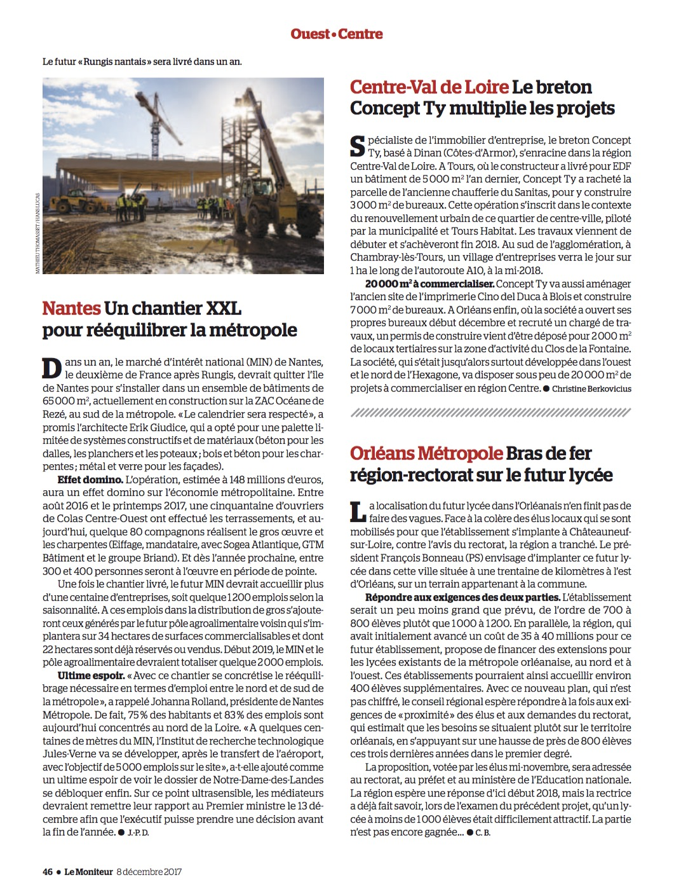

/// 19 Dec 2017 ///
Un chantier XXL

Visite du chantier du Marché d’intérêt national MIN de Nantes, le deuxième de France après Rungis, avec Johanna Rolland, maire de Nantes et présidente de Nantes métropole, des élus locaux et la presse. Rezé, le 13 novembre 2017.
Publication dans le LE MONITEUR N°5952.
